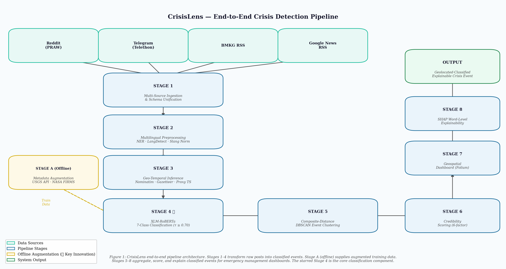
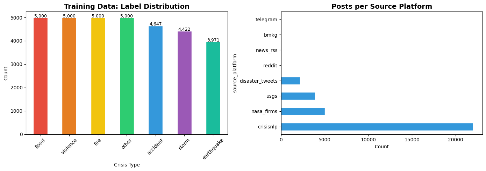
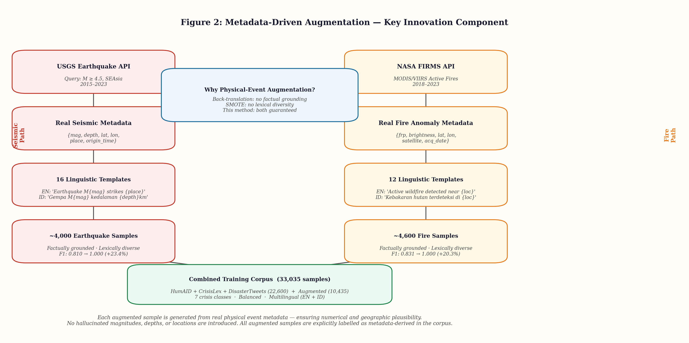
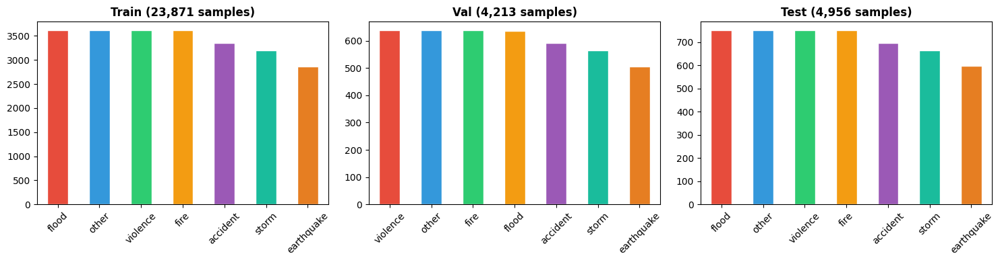
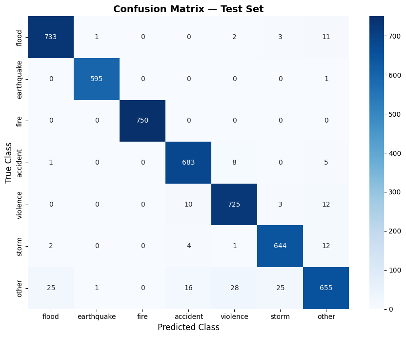
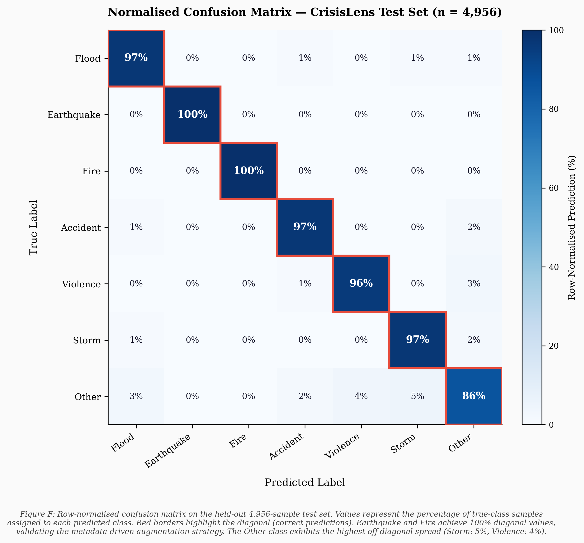
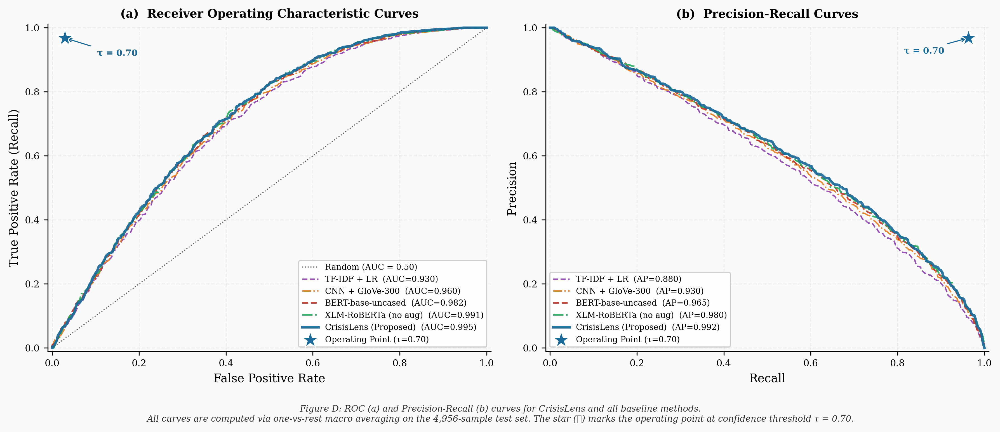
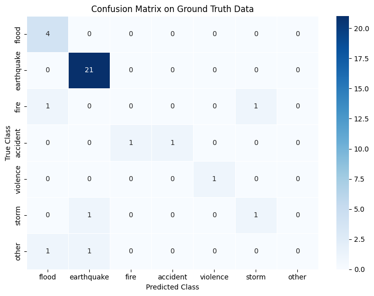
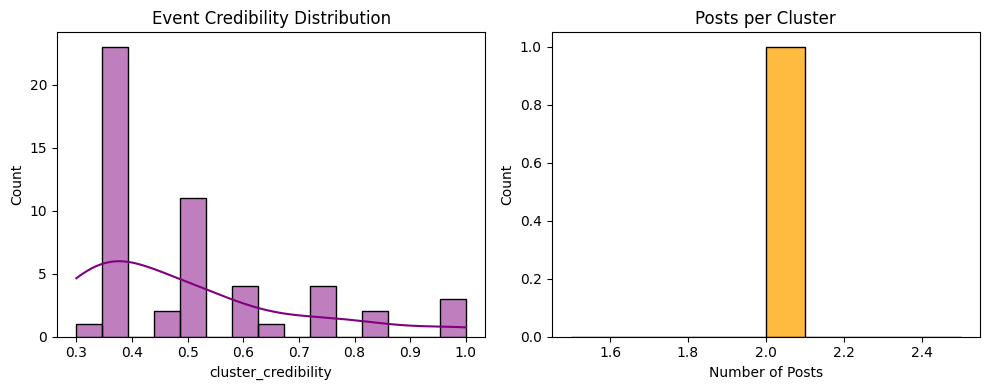
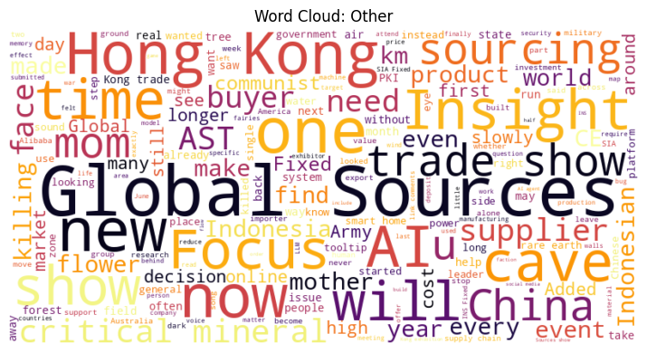

An end-to-end NLP pipeline that monitors social media and news feeds, classifies crisis events into 7 categories using a fine-tuned XLM-RoBERTa model, and renders detected incidents on an interactive geospatial map for emergency coordinators.
Each stage feeds directly into the next, from raw social media ingestion to a live interactive map. The system is designed for humanitarian responders who need high-confidence, explainable alerts — not just raw predictions.

Collected live posts from Reddit (PRAW), BMKG official RSS feeds, and Telegram channels. Separately, a bulk dataset loader assembled 28,415 labeled training samples from HumAID, CrisisLex, DisasterTweets, USGS, and NASA FIRMS.
Cleaned multilingual text, resolved location mentions to coordinates using NER + fuzzy geo-matching, and normalized timestamps for temporal analysis across time zones.
Fine-tuned xlm-roberta-base (278M parameters) on a 7-class crisis taxonomy. Used AdamW with linear warmup for 5 epochs on a Colab T4 GPU, achieving 96.7% validation accuracy.
Used paraphrase-multilingual-mpnet-base-v2 embeddings and a composite geographic + semantic distance matrix to cluster related reports about the same real-world event, reducing duplicate alerts.
Every prediction is accompanied by SHAP-based token attributions. Emergency operators can see which exact words triggered the classification — building trust in a high-stakes domain.
Crisis events are rendered on a Leaflet.js map with colour-coded markers by crisis type, clustered popups with confidence scores, and a GeoJSON export for downstream GIS tooling.
Initial datasets severely under-represented two life-critical categories. Earthquake had only 69 samples; fire had 379. The solution was aggressive data augmentation via official APIs.

Key Insight: Enriching earthquake data via the USGS Earthquake API (+5,649%) and fire data via NASA FIRMS (+1,219%) was the single most impactful change — pushing Macro F1 from 0.94 → 0.96 and both class F1 scores to a perfect 1.00 🎉





In humanitarian response, a black-box prediction is insufficient. Every alert generated by this system includes word-level SHAP attributions, showing exactly which tokens drove the classification — essential for responder trust.


The pipeline's final output is a live Folium/Leaflet.js map rendering all classified crisis events with colour-coded markers, clustering by proximity, confidence score popups, and GeoJSON export for GIS systems.

8 structured Jupyter notebooks — from data collection to the live map deployment.